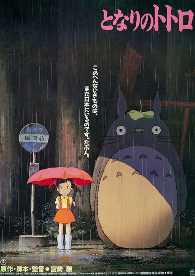

Obras del Studio Ghibli
Filtrar por director

El Niño y la Garza
2023
Earwig y la Bruja
2020

La Tortuga Roja
2016

El Recuerdo de Marnie
2014

El Cuento de la Princesa Kaguya
2013

Se Levanta el Viento
2013

La Colina de las Amapolas
2011

El Mundo Secreto de Arriety
2010

Ponyo y el Secreto de la Sirenita
2008

Cuentos de Terramar
2006

El Increíble Castillo Vagabundo
2004

El Regreso del Gato
2002
Ghiblies Episodio 2
2002

El Viaje de Chihiro
2001
Mis Vecinos los Yamada
1999

La Princesa Mononoke
1997

Susurros del Corazón
1995

On Your Mark
1995

Pompoco
1994

Puedo Escuchar el Mar
1993

Porco Rosso
1992

Recuerdos del Ayer
1991

Kiki: Entregas a Domicilio
1989

Mi Vecino Totoro
1988

La Tumba de las Luciérnagas
1988
El Castillo en el Cielo
1986

Nausicaä del Valle del Viento
1984